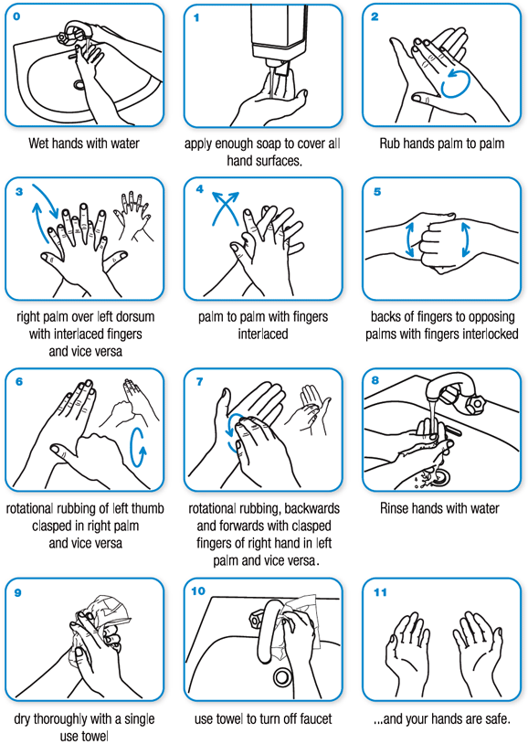

ROLES AND RESPONSIBILITIES
Immersive Environments and its workers need to observe very high standards of hygiene to reduce the risk of blood borne, or other, infections, in order to keep everyone healthy and safe.
Specified volunteer roles include:
- CLEAN ASSISTANT (CLEAN): Responsible for the handling of supplies with clean gloved hands only except in the assistance of hook removal.
- BIO ASSISTANT (DIRTY):
- Responsible for the handling of all contaminated items and individuals. Specific personal protective equipment (PPE) requirements, set out below, are to be adhered to; and
- Responsible for blood spotting on an individual while a suspension is taking place.
- PIERCER: Responsible for the safe and aseptic piercing of all individuals to be suspended.
- RIGGER: Responsible for the aseptic handling of any rigging - specific to the rig plate down.
HAND WASHING
This is a diagram of appropriate hand washing procedure. This is to be done at the beginning of any preparation, piercing or handling of any individual to be suspended as well as after eating, smoking or using the bathroom.

POST SUSPENSION
PREPARATION
- The nominated volunteer is to designate clean and bio assistants. Bio assistants to don PPE (see above).
- In the case of hooks for personal use, the clean assistant should ensure there is a snap lock bag with enzymatic gel and a plastic container ready (snap lock bag).
- If needed, bio assistant to lube the entry and exit wounds with a small amount of sterile lubricant.
- The clean volunteer is to open the gauze.
HOOK REMOVAL AND WOUND CLEAN– BIO ASSISTANT
-
The bio assistant is to perform the following steps for each wound:
- Remove hook.
- Give the hook to the clean assistant.
- Cover the wound with gauze.
- Immediately apply pressure to the wound.
- Massage the air out of the wound while keeping gauze over wounds.
- When it's clear bleeding is under control (not flowing), move onto the next hook.
- Repeat until all hooks are out and repeat for all wounds.
- Once all hooks have been removed - in circular motions, starting at the inside, clean the area around the holes with soapy water-soaked gauze to remove any dried blood. Dry with clean gauze if necessary.
- Remove outer gloves.
HANDLING CONTAMINATED HOOKS – CLEAN ASSISTANT
-
The clean assistant is to:
- Have disinfectant wipes ready.
- Receive the contaminated hooks from the bio assistant.
- Use the disinfectant wipe to remove any debris from the hooks.
-
Place the hooks in the designated hook container or the snap lock bag.
- In the case of hooks for personal use the clean assistant is to:
- Change exam gloves.
- Place hooks in the snap lock bag.
- Seal snap lock bag.
- Change exam gloves.
- Place the snap lock bag into another snap lock bag then into the plastic container.
- Seal the plastic container with masking tape.
- Name the container.
- Hand the container to the suspendee.
WOUND TREATMENT – CLEAN ASSISTANT AND BIO ASSISTANT
-
After the bio assistant has removed all hooks and cleaned the wounds with soapy water, the clean assistant is to:
- Open the bandages and remove them from the package, ensuring the sterile pad is not touched, then hand the bandage to the bio assistant.
- Repeat for all wounds.
-
The bio assistant is then to:
- Without touching the wounds with their gloves, cover the wound with the bandage and apply pressure.
- Repeat for all wounds.
- Clean tray and table as defined in the break down section then remove PPE (apron > sleeves > gloves > mask > eyewear) and dispose of single use items in contaminated waste bin. Disinfect eyewear if visibly contaminated.
In conditions where numerous wounds need to be dressed, additional assistants may be required.
It may also be acceptable for an experienced team member to adjust this protocol accordingly, where both roles may be consolidated.
SUTURING PROTOCOL
In circumstances where suturing is required the health and safety officer (Eden) is to be notified. Eden will then nominate a volunteer to suture the wounds.
The nominated volunteer is to:
- Wash hands and don full PPE.
- Have a clean assistant set up a tray with sterile gloves and suture kit.
- Open sterile gloves, using the pack as a sterile field. unpack all other sterile supplies and place them on the sterile field.
- Don sterile gloves employing aseptic technique.
- Once suturing is done, clean the surrounding area with soapy water and gauze as well as dry gauze.
- Follow the breakdown procedure.
BLOOD / OPIM EXPOSURE
If you injure yourself with a used sharp, or were exposed in some other way to someone else’s blood or body fluid, immediately follow these steps:
SHARPS INJURY:
- Inform the health and safety officer (Eden) and remove yourself from the area.
- At the hand wash sink, encourage the wound to bleed by holding it under running water.
- Wash the wound with soap and water.
- Do not scrub the wound while you are washing it.
- Dry the wound and cover with a waterproof plaster.
- Disinfect the sink once able to - warn others it is contaminated.
- The health and safety officer (Eden) will fill in an incident report form.
- Fill in an exposure form and seek medical attention if needed.
IF SPLASHES TO THE NOSE, EYES, MOUTH OR SKIN:
- Flush these areas with running water.
- Report the incident to the health and safety officer (Eden).
- Fill in an exposure form and seek medical attention if needed.